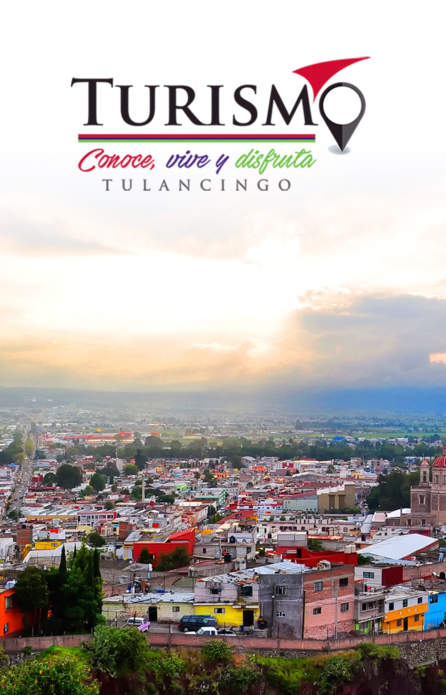

<ion-header >
  <ion-navbar color="primary">
    <ion-title>Turismo</ion-title>
    <ion-buttons>
    <button ion-button
            icon-only
            menuToggle>
      <ion-icon name="menu"></ion-icon>
    </button>
  </ion-buttons>
  </ion-navbar>

</ion-header>
<ion-content class="card-background-page">
  <ion-card class="img">
      
    </ion-card>
</ion-content>
<ion-footer>
  <ion-card class="boton">
    <button ion-button icon-start color="danger">
      <ion-icon name="ios-camera"></ion-icon>
      Turismo
    </button>
    <button ion-button color="danger" icon-start>
       <ion-icon name="ios-cart"></ion-icon>
      Comercio
    </button>
    <button ion-button color="danger" icon-start>
      <ion-icon name="ios-restaurant"></ion-icon>
      Comida
    </button>
</ion-card>
</ion-footer>
